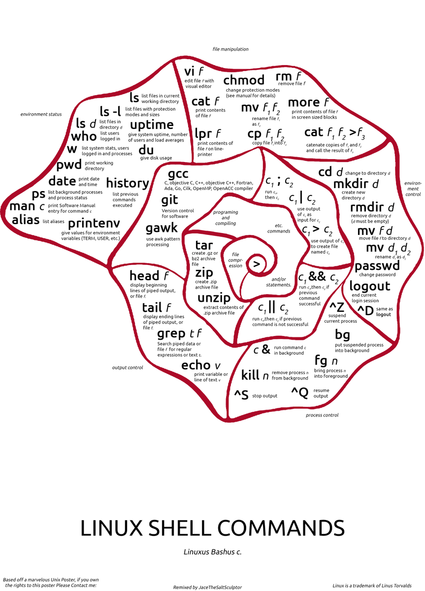

主理人序
一顿操作猛如虎，一回生，二回熟；
命令行界面是什么

命令行界面（英语：Command-Line Interface，缩写：CLI）是在图形用户界面得到普及之前使用最为广泛的用户界面，它通常不支持鼠标，用户通过键盘输入指令，计算机接收到指令后，予以执行。也有人称之为字符用户界面（character user interface, CUI）。
常见的CLI程式
bash / sh / ksh / csh / zsh（Unix-like系统）
COMMAND.COM（MS-DOS系统）
cmd.exe / 命令提示字元（Windows NT和Windows CE系统）
Windows PowerShell（支援.NET Framework技术的Windows NT系统）
via 维基百科
命令行结构
一条完整的命令行语法一般包括三个部分：[命令] [选项] [参数]，如下：
rm -rf /*选项是调整命令执行行为的开关，即，选项不同决定了命令的显示结果不同；
参数是指命令的作用对象；
rm -rf /* 即表示强制（参数f代表强制）删除 /目录下的所有文件（参数r代表递归），该命令学名又叫一键跑路，务必谨慎使用；
常用命令推荐
参考 Linux 常用命令学习 （学完这些，基本上能完成类Windows操作需求
ls 查看当前目录
就是 list 的缩写，通过 ls 命令不仅可以查看 linux 文件夹包含的文件，而且可以查看文件权限(包括目录、文件夹、文件权限)查看目录信息等等。
常用参数搭配：
ls -a 列出目录所有文件，包含以.开始的隐藏文件
ls -A 列出除.及..的其它文件
ls -r 反序排列
ls -t 以文件修改时间排序
ls -S 以文件大小排序
ls -h 以易读大小显示
ls -l 除了文件名之外，还将文件的权限、所有者、文件大小等信息详细列出来cd 进入文件夹
进入[文件夹]；
cd / 进入要目录
cd ~ 进入home目录
cd - 进入上一次工作路径pwd 查看当前路径
pwd 查看当前所在路径mkdir 创建文件夹
创建文件夹；
mkdir fuck 当前工作目录下创建名为fuck的文件夹
mkdir -p /root/fuck 在/root目录下创建路径为/root/fuck的目录，若不存在，则创建：mv 移动
移动文件或修改文件名，根据第二参数类型（如目录，则移动文件；如为文件则重命令该文件）;
mv fuck.log fuck.txt 将文件 fuck.log 重命名为 fuck.txt
mv fuck.txt you.txt too.txt /shit 将文件fuck.txt you.txt too.txt 移动到根的 shit 目录中
mv -i log1.txt log2.txt 将文件 log1.txt 改名为 file2，如果 log2.txt 已经存在，则询问是否覆盖
mv * /root/ 移动当前文件夹下的所有文件到/root目录下cp 复制
将源文件复制至目标文件，或将多个源文件复制至目标目录。(注意：命令行复制，如果目标文件已经存在会提示是否覆盖，而在 shell 脚本中，如果不加 -i 参数，则不会提示，而是直接覆盖！)
-i 提示
-r 复制目录及目录内所有项目
-a 复制的文件与原文件时间一样我常用
cp -rf /a/* /b/cat 抓取文件内容
cat filename 一次显示整个文件
cat > filename 从键盘创建一个文件
cat file1 file2 > file 将几个文件合并为一个文件grep 正则搜索
强大的文本搜索命令，grep(Global Regular Expression Print) 全局正则表达式搜索。
grep 的工作方式是这样的，它在一个或多个文件中搜索字符串模板。如果模板包括空格，则必须被引用，模板后的所有字符串被看作文件名。搜索的结果被送到标准输出，不影响原文件内容。
grep [option] pattern file|dir常用参数
-A n --after-context显示匹配字符后n行
-B n --before-context显示匹配字符前n行
-C n --context 显示匹配字符前后n行
-c --count 计算符合样式的列数
-i 忽略大小写
-l 只列出文件内容符合指定的样式的文件名称
-f 从文件中读取关键词
-n 显示匹配内容的所在文件中行数
-R 递归查找文件夹cat test1.txt | grep -f key #从文件中读取关键词[key]
ps -ef | grep nginx #查找指定进程[nginx]是否存在
grep -lR '^fuck' /root #从文件夹中递归查找以fuck开头的行，并只列出文件
grep -E 'ed|at' fuck.txt #显示包含 ed 或者 at 字符的内容行wc 统计文本
wc (word count) 功能为统计指定的文件中字节数、字数、行数，并将统计结果输出；
命令格式：
wc [option] file..命令参数：
-c 统计字节数
-l 统计行数
-m 统计字符数
-w 统计词数，一个字被定义为由空白、跳格或换行字符分隔的字符串wc fuck.txt #查找文件的 行数 单词数 字节数 文件名
cat fuck.txt | wc -l #统计输出结果的行数ps
ps(process status)，用来查看当前运行的进程状态，一次性查看，如果需要动态连续结果使用 top；
linux上进程有5种状态:
1.运行(正在运行或在运行队列中等待)
2.中断(休眠中, 受阻, 在等待某个条件的形成或接受到信号)
3.不可中断(收到信号不唤醒和不可运行, 进程必须等待直到有中断发生)
4.僵死(进程已终止, 但进程描述符存在, 直到父进程调用wait4()系统调用后释放)
5.停止(进程收到SIGSTOP, SIGSTP, SIGTIN, SIGTOU信号后停止运行运行)
ps 工具标识进程的5种状态码：
D 不可中断 uninterruptible sleep (usually IO)
R 运行 runnable (on run queue)
S 中断 sleeping
T 停止 traced or stopped
Z 僵死 a defunct (”zombie”) process命令参数：
-A 显示所有进程
a 显示所有进程
-a 显示同一终端下所有进程
c 显示进程真实名称
e 显示环境变量
f 显示进程间的关系
r 显示当前终端运行的进程
-aux 显示所有包含其它使用的进程ps -ef #显示当前所有进程环境变量及进程间关系
ps -A #显示当前所有进程
ps -aux | grep apache #与grep联用查找某进程
ps aux | grep '(cron|syslog)' #找出与 cron 与 syslog 这两个服务有关的 PID 号码top 查看进程
显示当前系统正在执行的进程的相关信息，包括进程 ID、内存占用率、CPU 占用率等;
常用参数：
-c 显示完整的进程命令
-s 保密模式
-p <进程号> 指定进程显示
-n <次数>循环显示次数kill 终止程序
发送指定的信号到相应进程。不指定型号将发送SIGTERM（15）终止指定进程。如果任无法终止该程序可用"-KILL" 参数，其发送的信号为SIGKILL(9) ，将强制结束进程，使用ps命令或者jobs 命令可以查看进程号。root用户将影响用户的进程，非root用户只能影响自己的进程。
常用参数：
-l 信号，若果不加信号的编号参数，则使用“-l”参数会列出全部的信号名称
-a 当处理当前进程时，不限制命令名和进程号的对应关系
-p 指定kill 命令只打印相关进程的进程号，而不发送任何信号
-s 指定发送信号
-u 指定用户kill -9 $(ps -ef | grep nginx) #先使用ps查找进程nginx，然后用kill杀掉以上。
熟练使用各项命令之后，可以着手学习Shell脚本；*.sh；以及crontab的使用；
脚本
crontab 定时执行
Linux crontab是用来定期执行程序的命令。
当安装完成操作系统之后，默认便会启动此任务调度命令。
crond 命令每分锺会定期检查是否有要执行的工作，如果有要执行的工作便会自动执行该工作。
而 linux 任务调度的工作主要分为以下两类：
1、系统执行的工作：系统周期性所要执行的工作，如备份系统数据、清理缓存
2、个人执行的工作：某个用户定期要做的工作，例如每隔10分钟检查邮件服务器是否有新信，这些工作可由每个用户自行设置
语法
crontab [ -u user ] file
crontab [ -u user ] { -l | -r | -e }crontab 是用来让使用者在固定时间或固定间隔执行程序之用，换句话说，也就是类似使用者的时程表。
参数说明：
-e : 执行文字编辑器来设定时程表，内定的文字编辑器是 VI，如果你想用别的文字编辑器，则请先设定 VISUAL 环境变数来指定使用那个文字编辑器(比如说 setenv VISUAL joe)
-r : 删除目前的时程表
-l : 列出目前的时程表时间格式
f1 f2 f3 f4 f5 program其中 f1 是表示分钟，f2 表示小时，f3 表示一个月份中的第几日，f4 表示月份，f5 表示一个星期中的第几天。program 表示要执行的程序。
当 f1 为 时表示每分钟都要执行 program，f2 为 时表示每小时都要执行程序，其余类推
当 f1 为 a-b 时表示从第 a 分钟到第 b 分钟这段时间内要执行，f2 为 a-b 时表示从第 a 到第 b 小时都要执行，其余类推
当 f1 为 /n 时表示每 n 分钟个时间间隔执行一次，f2 为 /n 表示每 n 小时个时间间隔执行一次，其余类推
当 f1 为 a, b, c,... 时表示第 a, b, c,... 分钟要执行，f2 为 a, b, c,... 时表示第 a, b, c...个小时要执行，其余类推；
0 * * * * /home/fuck.sh #每月每天每小时的第 0 分钟执行一次 /home/fuck.sh
0 6-12/3 * 12 * /home/fuck.sh #在 12 月内, 每天的早上 6 点到 12 点，每隔 3 个小时 0 分钟执行一次 /home/fuck.sh
0 17 * * 1-5 /home/fuck.sh #周一到周五每天下午 5:00 执行一次 /home/fuck.sh
20 0-23/2 * * * /home/fuck.sh #每月每天的午夜 0 点 20 分, 2 点 20 分, 4 点 20 分....执行 /home/fuck.sh0 */2 * * * /sbin/service httpd restart 意思是每两个小时重启一次apache
50 7 * * * /sbin/service sshd start 意思是每天7：50开启ssh服务
50 22 * * * /sbin/service sshd stop 意思是每天22：50关闭ssh服务
0 0 1,15 * * fsck /home 每月1号和15号检查/home 磁盘
1 * * * * /home/bruce/backup 每小时的第一分执行 /home/bruce/backup这个文件
00 03 * * 1-5 find /home "*.xxx" -mtime +4 -exec rm {} \; 每周一至周五3点钟，在目录/home中，查找文件名为*.xxx的文件，并删除4天前的文件。
30 6 */10 * * ls 意思是每月的1、11、21、31日是的6：30执行一次ls命令注意：当程序在你所指定的时间执行后，系统会寄一封信给你，显示该程序执行的内容，若是你不希望收到这样的信，请在每一行空一格之后加上 > /dev/null 2>&1 即可
vi 编辑器
vi命令是UNIX操作系统和类UNIX操作系统中最通用的全屏幕纯文本编辑器。Linux中的vi编辑器叫vim，它是vi的增强版（vi Improved），与vi编辑器完全兼容，而且实现了很多增强功能。
语法
vi(选项)(参数)选项
+<行号>：从指定行号的行开始先是文本内容；
-b：以二进制模式打开文件，用于编辑二进制文件和可执行文件；
-c<指令>：在完成对第一个文件编辑任务后，执行给出的指令；
-d：以diff模式打开文件，当多个文件编辑时，显示文件差异部分；
-l：使用lisp模式，打开“lisp”和“showmatch”；
-m：取消写文件功能，重设“write”选项；
-M：关闭修改功能；
-n：不实用缓存功能；
-o<文件数目>：指定同时打开指定数目的文件；
-R：以只读方式打开文件；
-s：安静模式，不现实指令的任何错误信息。| 命令 | 描述 |
|---|---|
| vi filename | 如果filename存在，则打开；否则会创建一个新文件再打开。 |
| vi -R filename | 以只读模式（只能查看不能编辑）打开现有文件。 |
| view filename | 以只读模式打开现有文件。 |
知识扩展
vi编辑器有三种工作方式：命令方式、输入方式和ex转义方式。
在Shell提示符后输入命令vi，进入vi编辑器，并处于vi的命令方式。此时，从键盘上输入的任何字符都被作为编辑命令来解释，例如，a(append）表示附加命令，i(insert）表示插入命令，x表示删除字符命令等。如果输入的字符不是vi的合法命令，则机器发出“报警声”，光标不移动。另外，在命令方式下输入的字符（即vi命令）并不在屏幕上显示出来，例如，输入i，屏幕上并无变化，但通过执行i命令，编辑器的工作方式却发生变化：由命令方式变为输入方式。
输入方式
通过输入vi的插入命令（i）、附加命令（a）、打开命令（o）、替换命令（s）、修改命令(c）或取代命令（r）可以从命令方式进入输入方式。在输入方式下，从键盘上输入的所有字符都被插入到正在编辑的缓冲区中，被当做该文件的正文。进入输入方式后，输入的可见字符都在屏幕上显示出来，而编辑命令不再起作用，仅作为普通字母出现。例如，在命令方式下输入字母i，进到输入方式，然后再输入i，就在屏幕上相应光标处添加一个字母i。
由输入方式回到命令方式的办法是按下Esc键。如果已在命令方式下，那么按下Esc键就会发出“嘟嘟”声。为了确保用户想执行的vi命令是在命令方式下输入的，不妨多按几下Esc键，听到嘟声后再输入命令。
ex转义方式暂且不表；
如何退出vi编辑器
按ESC键跳到命令模式，然后输入相应指令并回车：
:w 保存文件但不退出vi.
:w file 将修改另外保存到file中，不退出vi.
:w! 强制保存，不推出vi.
:wq 保存文件并退出vi.
:wq! 强制保存文件，并退出vi.
q: 不保存文件，退出vi.
:q! 不保存文件，强制退出vi.
:e! 放弃所有修改，从上次保存文件开始再编辑nano 编辑器
nano是一个字符终端的文本编辑器，有点像DOS下的editor程序。它比vi/vim要简单得多，比较适合Linux初学者使用。某些Linux发行版的默认编辑器就是nano。
语法
nano [选项] [[+行,列] 文件名]...-h, -? --help 显示此信息
+行,列 从所指列数与行数开始
-A --smarthome 启用智能 HOME 键
-B --backup 储存既有文件的备份
-C <目录> --backupdir=<目录> 用以储存独一备份文件的目录
-D --boldtext 用粗体替代颜色反转
-E --tabstospaces 将已输入的制表符转换为空白
-F --multibuffer 启用多重文件缓冲区功能
-H --historylog 记录与读取搜索/替换的历史字符串
-I --ignorercfiles 不要参考nanorc 文件
-K --rebindkeypad 修正数字键区按键混淆问题
-L --nonewlines 不要将换行加到文件末端
-N --noconvert 不要从 DOS/Mac 格式转换
-O --morespace 编辑时多使用一行
-Q <字符串> --quotestr=<字符串> 引用代表字符串
-R --restricted 限制模式
-S --smooth 按行滚动而不是半屏
-T <#列数> --tabsize=<#列数> 设定制表符宽度为 #列数
-U --quickblank 状态行快速闪动
-V --version 显示版本资讯并离开
-W --wordbounds 更正确地侦测单字边界
-Y <字符串> --syntax=<字符串> 用于加亮的语法定义
-c --const 持续显示游标位置
-d --rebinddelete 修正退格键/删除键混淆问题
-i --autoindent 自动缩进新行
-k --cut 从游标剪切至行尾
-l --nofollow 不要依照符号连结，而是覆盖
-m --mouse 启用鼠标功能
-o <目录> --operatingdir=<目录> 设定操作目录
-p --preserve 保留XON (^Q) 和XOFF (^S) 按键
-q --quiet 沉默忽略启动问题, 比如rc 文件错误
-r <#列数> --fill=<#列数> 设定折行宽度为 #列数
-s <程序> --speller=<程序> 启用替代的拼写检查程序
-t --tempfile 离开时自动储存，不要提示
-u --undo 允许通用撤销[试验性特性]
-v --view 查看(只读)模式
-w --nowrap 不要自动换行
-x --nohelp 不要显示辅助区
-z --suspend 启用暂停功能
-$ --softwrap 启用软换行
-a, -b, -e,
-f, -g, -j (忽略，为与pico 相容)nano fuck.txt #打开可编辑文件
Ctrl+W #搜索
Ctrl+Y #到上一页
Ctrl+V #到下一页
Ctrl+O #保存修改
Ctrl+X #退出编辑界面如果你修改了文件，下面会询问你是否需要保存修改。输入Y确认保存，输入N不保存，按Ctrl+C取消返回。如果输入了Y，下一步会让你输入想要保存的文件名。如果不需要修改文件名直接回车就行；若想要保存成别的名字（也就是另存为）则输入新名称然后确 定。这个时候也可用Ctrl+C来取消返回。
via nano命令
Linux 系统目录结构
学习资料
1.Linux 命令大全
2.Linux 常用命令学习 （基本上能完成类Windows操作需求
3.Linux crontab 命令
4.Linux 系统目录结构
Shell 客户端推荐
FinalShell是一体化的的服务器，网络管理软件，不仅是ssh客户端，还是功能强大的开发，运维工具，充分满足开发，运维需求！
termius：跨平台生产力工具（Windows，macOS，Linux，Android，iOS，iOS较为强悍）。
JuiceSSH - SSH 管理工具 （安卓端强悍）
联系主理人
1.关注频道 https://t.me/limboprossr 不失联；
2.毒奶粉们（我管我的Fans）可联系 TG机器人 或发送 邮件获取帮助；
3.或点击本页面右下角的聊天按钮联系；
版权属于：毒奶
联系我们： https://limbopro.xyz/6.html
电报频道： https://t.me/limboprossr
推特账号： https://twitter.com/limboprossr
集美账号： https://www.instagram.com/limboprossr/
油管账号 ： http://bit.ly/2VJcz7o/
机场推荐： https://limbopro.xyz/865.html
上网必会： https://limbopro.xyz/archives/2910.html
广告屏蔽： https://limbopro.xyz/archives/adguard.html
实用工具： https://limbopro.xyz/category/tools/
网站优化： https://limbopro.xyz/category/Typecho/
美图欣赏： https://limbopro.xyz/category/instagram/
开车专栏： https://limbopro.xyz/category/NSFW/
博客镜像： https://limbopro.github.io（每日0点更新）本文链接：https://limbopro.xyz/archives/shell.html
本文采用 CC BY-NC-SA 4.0 许可协议 ，转载和引用时请注意遵守协议！